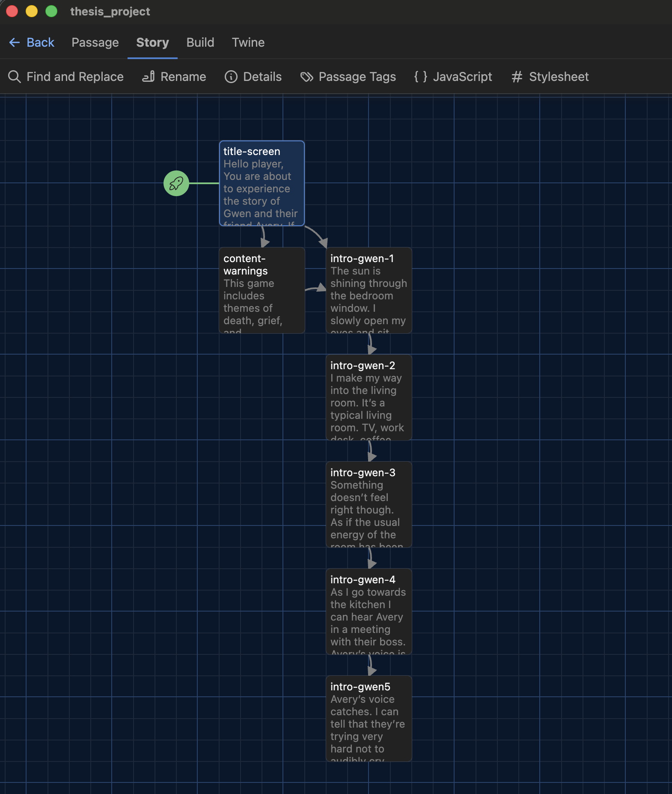
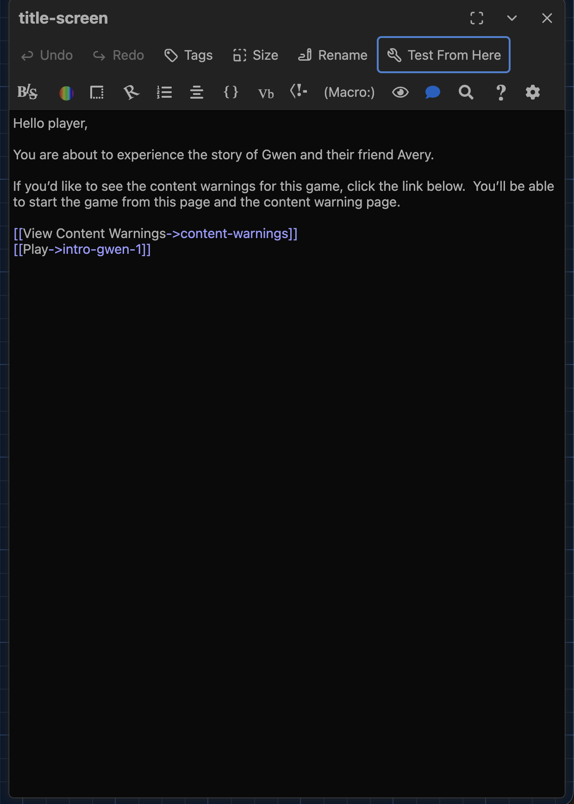
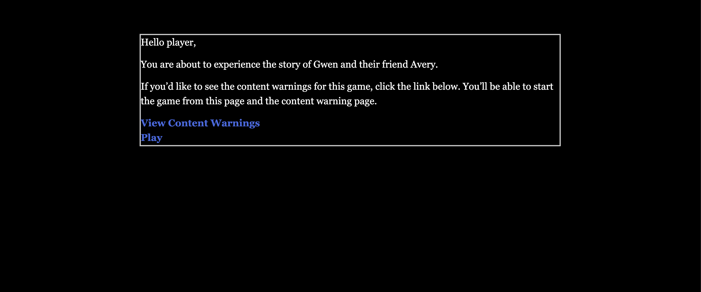
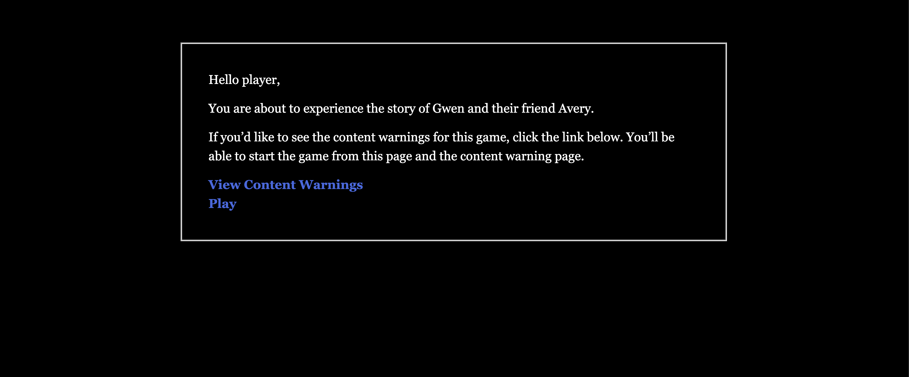

Week 3 Progress
9/17/26
Revised Schedule
I worked with ChatGPT today to synthesize the notes from my one-on-one, the rubric sent out this morning, and the original class schedule to make a new planning document. This was absolutely necessary because my original one did not have all the information to make it accurate. I did coach ChatGPT to fix errors, rewrite confusing parts, and use the columns that I wanted to create a table. I have stored this table inside my thesis Google Doc with a ChatGPT acknowledgement in bold at the top.
I’m so happy to have this because it makes the workload less intimidating and easy to chunk across the week itself.
This is the schedule for this week specifically.
| Date | Focus | Plan |
|---|---|---|
| Thu 9/17 | 📚 Research | Continue the interactive-narrative article you’re already working through. Take useful notes, especially anything relevant to interaction/choice/narrative design. If energy permits, identify the next source to read. |
| Fri 9/18 | 🎮 Prototype | Work in Twine. Continue the script/current passages and choose one useful thing to experiment with for next week’s prototype. The goal is something you can show, not a polished chunk of the final game. |
| Sat 9/19 | 📝 Outline + light research | Create the annotated-outline document and put in all required paper headings. Start rough notes/descriptions under the sections you already understand. Look through your old independent-study readings and flag potentially relevant sources. |
| Sun 9/20 | Buffer / off | No required thesis work. If something slipped earlier, this is available as a catch-up day—but I would rather preserve it as breathing room. |
| Mon 9/21 | 🎮 Prototype | Main prototype work session. Get whatever you’re showing Wednesday into demonstrable shape. Test it yourself and make notes about what worked, what didn’t, and what questions you want feedback on. |
| Tue 9/22 | 📚 + 🎮 Wrap-up | Process another research source if feasible. Do a final prototype check, make sure your Twine build/link works, and prepare a few points about what you experimented with and what feedback you want. No major new features Tuesday night. |
| Wed 9/23 | 🎓 Class | Show prototype. Get feedback. After class, Week 4 begins and we switch to the next row of your project plan. |
Literature Research
This journal is explicitly for the progress of the game development itself. I will not be discussing any of the literature that I am reading here unless it impacts design/development choices.
Future of this Journal
I might not be posting in here every day. Some days might be dedicated solely to paper related work and on those days I won’t make an entry.
Goals for Tomorrow
- Continue the script for the game
- Start porting the passages into Twine
9/18/26
Porting to Twine
I put all my existing script into Twine. I’m naming the passages using hyphens instead of underscores because Twine considers underscores code related.
The title screen and the content warning passages both point to intro-gwen-1 which is the first passage of the game. Each paragraph of the script was given its own passage. Each passage points to the next one.
Current State of my Twine Map

Title Screen Passage Edit Window

Testing CSS Code
Harlowe has a whole library of macros. These are like functions you can use in your passages to do all sort of things. It can set variables, add style to different elements, and do things like save and load your game state.
I tried using an enchantment. Enchantments are a type of changer that applies style to various elements of a passage. See documentation here.
I put a border around the passage but there was no way to give it padding so it touched all the text.

After some Google searching I found that the Twine application has a window for global stylesheet overrides. I was able to add padding to the passage element and a border!
CSS Code
tw-passage {
border-style: groove;
padding: 50px
}

Goals for Next Development Day
- Further explore CSS elements
- Write 2 - 4 story beats and add them into Twine